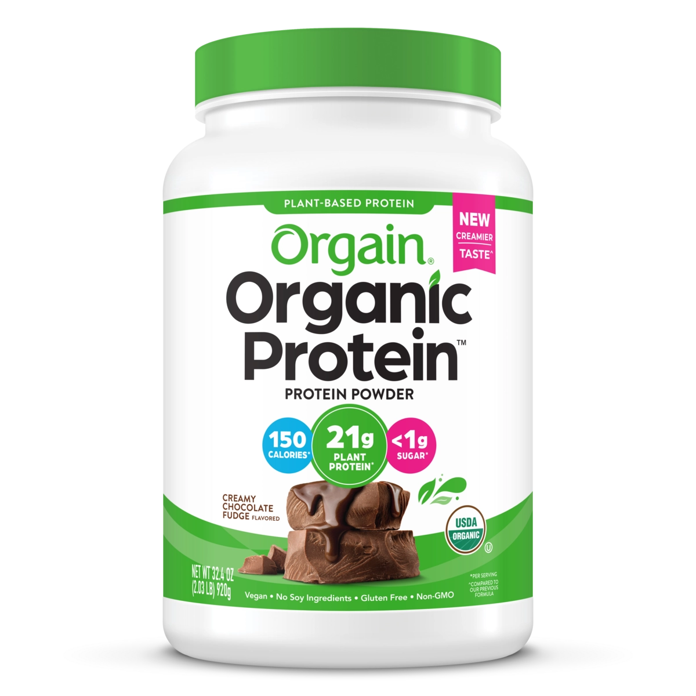

Product imagery supplied by the retailer. Packaging may vary — verify the Supplement Facts panel on the container you receive.
Orgain
Organic Protein Plant Based Protein Powder
Our analysis — editorial take, not from the label
The grocery-store default for vegan protein: USDA Organic, 21 g protein from a four-source plant blend, and a reformulated sweetener system that dropped erythritol.
- Protein
- 21 g
- Per scoop
- 46%
- Source
- plant blend
- Servings
- 20
Price tier: Mid-range · relative cost per full serving across this database
We don't list dollar prices — they change daily and go stale. Check the live price instead:
View current price Compare all protein powdersScoop Sense doesn't collect user reviews and won't invent them. Read customer reviews on Amazon
Affiliate links — Scoop Sense may earn a commission at no additional cost to you.
Figures verified against Creamy Chocolate Fudge (46 g two-scoop serving, 2.03 lb tub); sweetened with organic stevia (Reb A) — current formula contains no erythritol.
Label verified: July 2026 · View supplement facts image
Label data
Per full serving · 20 servings per container · from the manufacturer's panel
| Protein per serving | 21 g |
|---|---|
| Serving size | 46 g |
| Protein per scoop | 46% |
| Source | plant blend |
| Sweetener | stevia |
| Organic plant protein blend (pea, brown rice, mung bean, chia) | 21 g |
| Prebiotic fiber | 6 g |
| Proprietary blend | No |
Primary label source: Orgain product page (Creamy Chocolate Fudge) · verified July 2026
Cautions
- Chocolate flavors contain trace caffeine from organic cocoa (brand states under 1/14 of a cup of coffee)
- 46 g two-scoop serving carries ~15 g carbs — different macro profile than a whey isolate
- Protein powders supplement food, not replace it
Product details
Where this label sits
Orgain Organic Protein Plant Based Protein Powder is one of the protein powders in the Scoop Sense database. It runs 20 servings per container at the full labeled serving. Everything on this page comes from the manufacturer's supplement facts panel as of July 2026 — never from the marketing page.
Key ingredients & studied doses
- Organic plant protein blend (pea, brown rice, mung bean, chia) · 21 g. Blending legume and grain proteins rounds out the amino-acid profile so the mix supplies all nine essential amino acids.
- Prebiotic fiber · 6 g. Labeled fiber content that also contributes to the thicker texture typical of plant powders.
Flavors & sweetener
Figures verified against Creamy Chocolate Fudge (46 g two-scoop serving, 2.03 lb tub); sweetened with organic stevia (Reb A) — current formula contains no erythritol.
Who it's best for
A standard-ratio powder — fine as a food supplement when total daily protein is what matters. Suits anyone avoiding dairy. Doses are mild enough to suit a first tub. Derived from the label figures above — not medical advice.
How we log this label
Every entry is built the same way: we read the current supplement facts panel, log each disclosed dose, compare it against the amounts used in published research, flag proprietary blends, and state the cautions plainly. The full methodology explains each step.
This label against the research
How we evaluate labelsEach bar shows the amount commonly used in published human research, and where this label's dose falls against it. Research amounts are context, not a recommendation — they are not doses, and nothing here is medical advice.
-
Protein21 g
At or above the studied amount0studied range 20 g–40 g50 g
Per-meal doses studied for muscle protein synthesis run about 20–40 g of high-quality protein, with the upper half of that range favoured for larger athletes and older adults.
Common questions about Orgain Organic Protein Plant Based Protein Powder
How much of a Orgain Organic Protein Plant Based Protein Powder scoop is actually protein?
21 g of protein from a 46 g serving — about 46%. The rest is flavoring, fats, carbs, and whatever else the label lists. A higher percentage means less filler per scoop.
Do the numbers for Orgain Organic Protein Plant Based Protein Powder assume one scoop or two?
All figures on this page are per full labeled serving. 46 g two-scoop serving carries ~15 g carbs — different macro profile than a whey isolate.